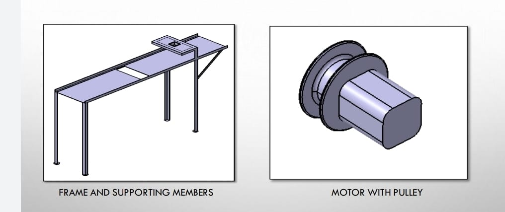
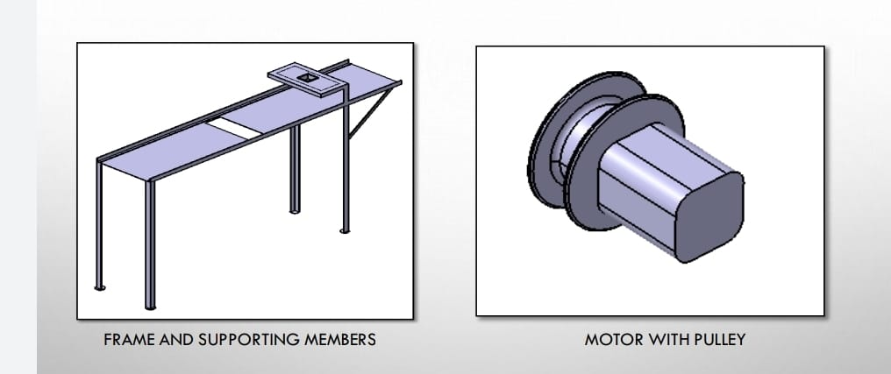
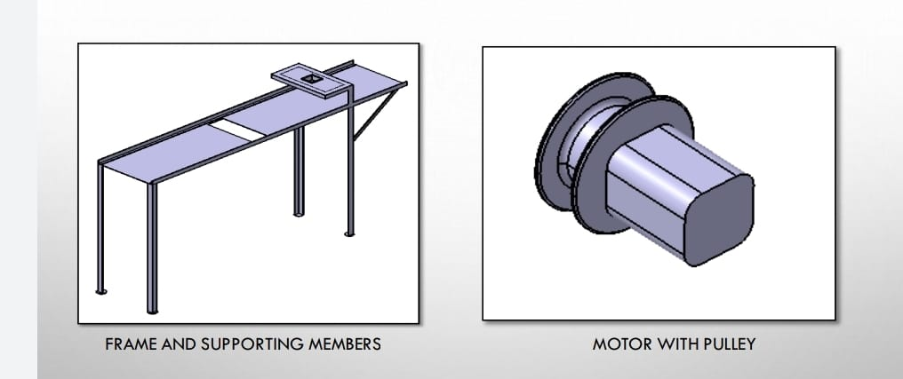
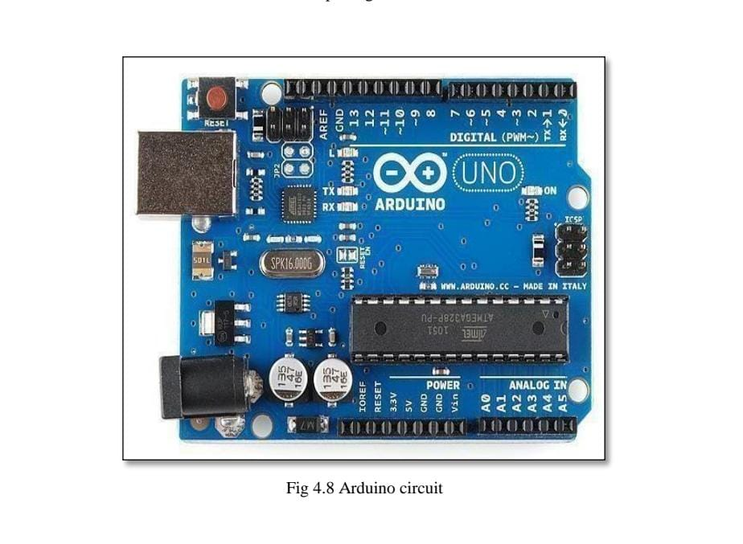
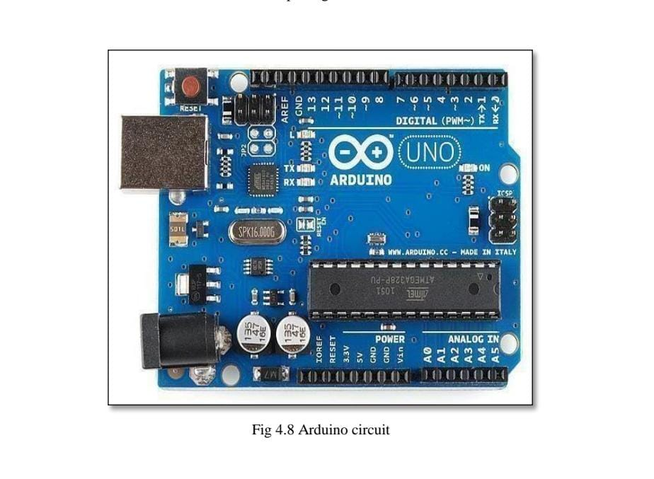

CATIA is a leading product design platform created by company headquartered in France. It’s an excellent tool for companies to come up with designs, do a comprehensive analysis, and manufacture new products which can be helpful in product development. CATIA can be beneficial to OEMs and manufacturers from various industries since they can utilize this tool in ensuring quicker analysis, design, and creation of new products. The revolutionary software integrates different approaches in the design and development of products, allowing for various disciplines to use their current tools in different stages of product development, hence, making CATIA handy for systems architects, engineers, and industrial designers. CATIA offers a productive 3D design environment that allows stakeholders and designers to work together on product modelling and sharing their product designs. The latest version of the platform provides a plethora of tools for analysis and design. It allows for the simulation of objects using a 3D digital mock-up. The tool has a new “design anytime and design anywhere” functionality that allows for capturing and sending of design changes offline to team members. CATIA eradicates any restrictions seen in a typical CAD platform. It does so by converting complicated product development processes into a simplified and convenient system. Having a multi-disciplined and collaborative approach in product development in one platform is what makes CATIA an above average platform for users. The 3D CAD system CATIA V5 was introduced in 1999 by Dassault Systems. Replacing CATIA V4, it represented a completely new design tool showing fundamental differences to its predecessor. The user interface, now featuring MS Windows layout, allows an easy integration of common software packages such as MS Office, several graphic programs or SAP-R3 products (depending on the IT environment) and others. The concept of CATIA V5 is to digitally include the complete process of product development, comprising the first draft, the design, the layout and at last the production and the assembly. The present training includes a selection of functionalities in the workbench Mechanical Design.

The project is about automation in the process cow feeding. In this project the bogies which are being used for feeding cows are controlled by the Arduino circuit. In this Arduino circuit we are going to burn the program to control the movement of the Bogie twice a day. At 12 PM and 5 PM. When the timing is set to the Arduino circuit, we just need to pour the bogie with feeder manual in the morning and the rest of the work is done by the system itself.

For smooth movement in all directions, two motors are necessary. Two D.C. motors with rated speeds of 200 rpm are used. These motors are placed in such a way that each motor drives four legs. The motors are powered by a rechargeable 12V battery.
 

Arduino is an open-source platform used for building electronics projects. Arduino consists of both a physical programmable circuit board (often referred to as a microcontroller) and a piece of software, or IDE (Integrated Development Environment) that runs on your computer, used to write and upload computer code to the physical board. The Arduino platform has become quite popular with people just starting out with electronics, and for good reason. Unlike most previous programmable circuit boards, the Arduino does not need a separate piece of hardware (called a programmer) in order to load new code onto the board -- you can simply use a USB cable. Additionally, the Arduino IDE uses a simplified version of C++, making it easier to learn to program. Finally, Arduino provides a standard form factor that breaks out the functions of the microcontroller into a more accessible package.
Consider weight of the consumable = 7kg (approximately) So, the force applied is equal to = 7x9.81 newton.
F= 68.67 N
Hence, the torque required = 68.67x 760 mm
= 52189N-mm=52.189N-m
So, we have to select a motor having considerably similar torque as calculated.
We have used 25 x 25 x 3mm angle for the manufacturing of frame.
The frame is of 1300 x 300 mm
Width and length of bogie = 254 mm
Height of the bogie= 50mm
Volume of bogie= 254 x 254 x 50 = 3225800 mm3 So the weight of the consumable bogie can carry is 3.226kg.
Power spent directly on transmission of pumped fluid energy is calculated by the formula:
NП = ρ·g·Q·H
NП – useful power, W ρ – density of the pumped medium, kg/m3 g – gravity acceleration, m/s2
Q – flow rate, m3/s
H – total head, m
NВ = NП/ηН
NВ – power on pump shaft,
NП – useful power, W ηН – pump efficiency.
In its turn, power developed by motor exceeds the shaft power, which is necessary to compensate for energy
losses in its transmission from motor to pump. Electric motor power and shaft power are linked by efficiencies of transmission and motor.
NД = NВ/(ηП·ηД)
NД = motor power consumption NB = shaft power ηП = transmission efficiency ηН – motor efficiency
Final motor generating capacity is calculated from motor power with regard to potential overload during start up.
NУ = β·NД
NУ = motor generating capacity
NД = motor power consumption
W β – power safety margin
H- Total head= 900 mm= 0.9m.
We calculate useful power consumed directly for medium pumping:NП
= ρ·g·Q·H =
Q= Area X Velocity
Velocity = 2𝜋N / 60
= 2 X 3.142 X 100 / 60
= 10.47 m/s
A = 𝜋𝑟2 − 𝜋𝑟2
= 2.8274E-5 m2
Q= 2.8274E-5 X 10.47 = 0.00029603 m3/s
Nn = 1000 X 9.81 X 0.00029603 X 0.9 = 2.6136 Watt
We are going to find How much toque is required to move 15 kg of load through lead screw for that we are taking diameter of lead as standard diameter. 2 for that as standard dimension.
1) Diameter of lead screw D=20mm
2) Diameter of Internal dia. of wheel d=25mm
3) Efficiency of lead screw: 42%
4) calculation are as follow. To calculate torque required to find lead of screw Lead= pitch * start
= 5*1 .................... as we consider single start thread
Lead=5mm.
Therefore, weight to be lifted=12 kg So the maximum load will be =12 kg Torque produce on lead screw is,
Torque = load*lead*efficiency/2π
= 12x5x0.42/2π
= 3.95 N.mm
As load = 15 kg so convent it into n/mm
Torque= 12*9.81X 5 X 0.42/2π Torque =39.34 N.mm.
For Body we are selecting low carbon steel.
1) It contains 0.05 – 0.25% carbon.
2) Having low tensile strength.
3) Having high surface hardness compared to medium & high carbon steel. 4) Cheap & easy to form or machinable.
Mild steel use as low carbon steel.
Using square hollow pipe for the body structure
Considering approx. value or suitable values according to working model.
Considering,
Size of section = 25*25 mm
Thickness Of Selection = 2mm
Total weight acted is consider as 12 to 13 Kg
= 12 * 9.81N W
= 117.72 N
Weight on single hollow square bar consider as =6 kg
=6 *9.81
=58.86 N
Square hollow pipe
X=ab/2 & y=cd/2
=25/2 & =25/2
=12.5 & =12.5
Now area to calculate as it is hollow pipe 25*25 & having thickness 25mm
A=(AB*BC)-(ab*bc)
A= (25*25)-((25-4)*(25-4))
=(25*25)-(21*21)
A=184mm2
As the pipe is subjected to load which is distributed on pipe.
Therefore, we consider simply supported beam with uniformly distributed load over the section. So, calculate the bending moment acted on section
M/I=6b/y=E/R M/I =6b/y ------------------------------------------------------------------------------
--flexural formula for calculating bending Moment acted on section I=BH^3/12-bh^3/12
=(25*25)^3/12-(21*21)^3/12
=32.55*10^3-16.205*10^3
I=16345mm^4
To calculate moment
As we consider simply supported beam having UDL of 15kg acted over it
M=wl^2/8
=12*1^2/8
=1. 93kg.m
=1.93*9.81
M=18. 97n.m
M=18.97*10^3 n-mm
Now using flexural formula calculate bending moment
M/I=6b/y
6b=MY/I
6b=18.97*10^3*12.5/16.345*10^3
6b=14.06 n/mm^2
When 15 kg or 117.72N force is applied over a hollow pipe 14.06 N/MM^2 bending effect occur.